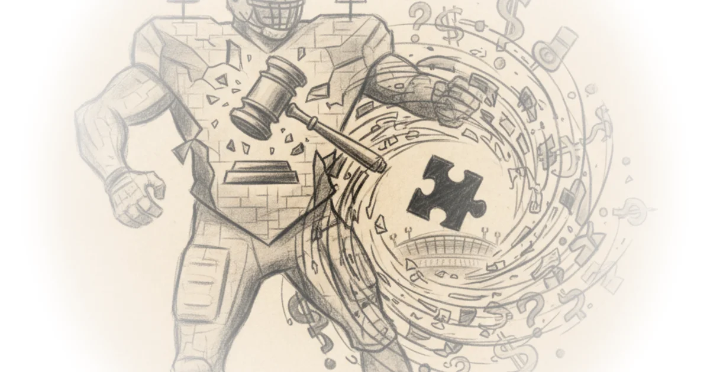

In a moment when federal regulators are scrutinizing the price of entertainment, Reason cuts through the noise to ask a question most observers are too polite to voice: Is this antitrust investigation driven by policy or by a decades-old personal grudge? The piece doesn't just report on the Justice Department's probe into the National Football League; it reframes the entire narrative as a collision between executive overreach and the absurdity of applying 19th-century monopoly laws to modern sports broadcasting.
The Personal Stakes of Public Policy
The article opens with a provocative hypothesis that challenges the official narrative of consumer protection. "If someone spurned you on numerous occasions, and you later ended up as president of an excessively powerful government, you might be tempted to get even by siccing your regulatory bulldogs on them," Reason writes, immediately setting a skeptical tone toward the administration's motives. The piece meticulously traces a timeline of failed acquisition attempts, noting that "Trump first tried to buy the Baltimore Colts from Jim Irsay in 1981, and possibly again in 1983," before detailing his subsequent interest in the Dallas Cowboys and his ownership of the New Jersey Generals in the rival United States Football League.

This historical deep dive is not merely gossip; it provides crucial context for understanding the current regulatory pressure. The article highlights the irony of the administration's stance by recalling how the USFL sued the NFL on antitrust grounds in 1985, hoping to force a merger that would have secured Trump an ownership stake. "The USFL won the case, but was only awarded a whopping $3.76. Apparently the check was never cashed," the editors note, underscoring the futility of those past legal battles compared to the current government's power.
Critics might argue that focusing on past rejections distracts from legitimate concerns about rising ticket prices and streaming costs. However, the piece effectively counters this by suggesting the administration is weaponizing the Federal Communications Commission to pressure the league. "The Trump administration, it seems, is not so subtly pressuring the NFL to forgo streaming dollars or face government regulation," Reason argues, pointing out that FCC commissioners are appointed by the president despite the commission's technical independence.
If the Justice Department and the FCC are going to apply regulatory pressure on the NFL for doing that, it's basically attacking the foundation of the capitalist system.
The Absurdity of Modern Antitrust
Beyond the personal narrative, the commentary shifts to a broader critique of how antitrust law has evolved from a tool against industrial monopolies to a blunt instrument for regulating sports entertainment. The piece draws a sharp contrast between the original intent of the Sherman Antitrust Act and its current application. "This was passed way back in 1890 because people were concerned about the power amassed by John D. Rockefeller's Standard Oil," Reason explains, reminding readers that the law was designed to prevent a single entity from controlling the kerosene needed to light homes, not to dictate how football games are broadcast.
The article points out the legal looseness that allows for such expansive interpretation today. "It was loosely worded and failed to define such critical terms as 'trust,' 'combination,' 'conspiracy,' and 'monopoly,'" according to the National Archives, a fact the editors use to illustrate the danger of vague legislation. The piece argues that the NFL is not a monopoly in any meaningful sense, noting that "the league is actually one of the easiest to watch, with over 87% of our games on free, broadcast television."
This argument is bolstered by a reference to the legal precedent of Federal Baseball Club v. National League, a 1922 Supreme Court decision that historically exempted baseball from antitrust laws, creating a unique legal landscape for professional sports. While the article doesn't dwell on the case, it implicitly relies on the understanding that sports leagues operate as "unique joint ventures," a defense the NFL is likely to mount. "Another [defense] is the U.S. Supreme Court may regard pro sports leagues as unique joint ventures where individual teams should receive deference in how they collaborate," writes Sportico legal analyst Michael McCann, quoted in the piece.
The Golf Paradox and Regulatory Overreach
The commentary concludes by pivoting to a seemingly unrelated topic—golf—to illustrate a broader theme of regulatory bodies trying to artificially constrain innovation and competition. The piece notes that golf's governing bodies are pushing for a "rollback" of golf ball technology, a move that "basically telling ballmakers to design balls that don't go as far." This section serves as a metaphor for the administration's approach to the NFL: an attempt to freeze the market in place rather than letting it evolve.
The editors observe that "scores on the PGA Tour haven't changed all that much in the last two decades, but that's because courses are lengthening their holes to compensate," highlighting the futility of trying to legislate athletic performance. "Until recent years golf has been a game of imagination, creativity, and variety. The game has become much more one dimensional," quotes the piece from Fred Ridley of Augusta National, a sentiment that mirrors the fear that government intervention could stifle the dynamic nature of sports broadcasting.
As we prepare to celebrate the 250th anniversary of America's founding, it is mind-boggling to be at the point where 'Should a sports league be allowed to put more games on streaming platforms?' is a real question that the Justice Department and the FCC are spending their time on.
Bottom Line
Reason's strongest contribution here is the unflinching linkage of personal history to public policy, exposing how a failed business deal from forty years ago may be driving a federal investigation today. The piece's greatest vulnerability lies in its dismissal of consumer protection concerns, which, while perhaps overstated by the administration, remain a legitimate topic for debate regardless of the president's motives. Readers should watch for the upcoming appeals court ruling on the NFL's Sunday Ticket lawsuit, as that decision will likely determine whether this political theater translates into lasting legal precedent.